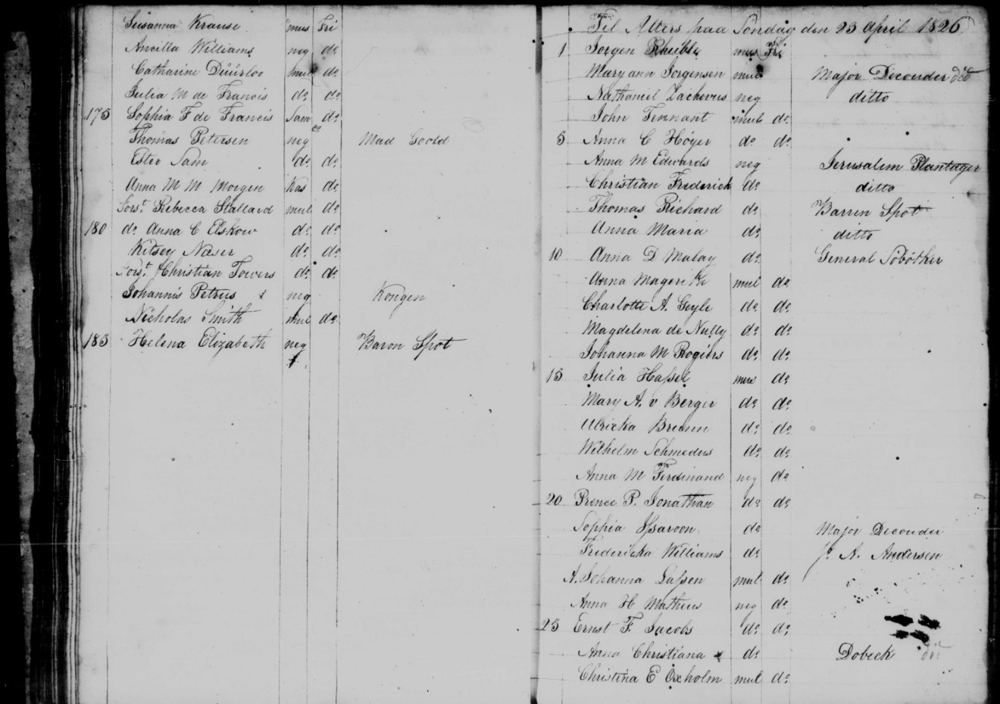
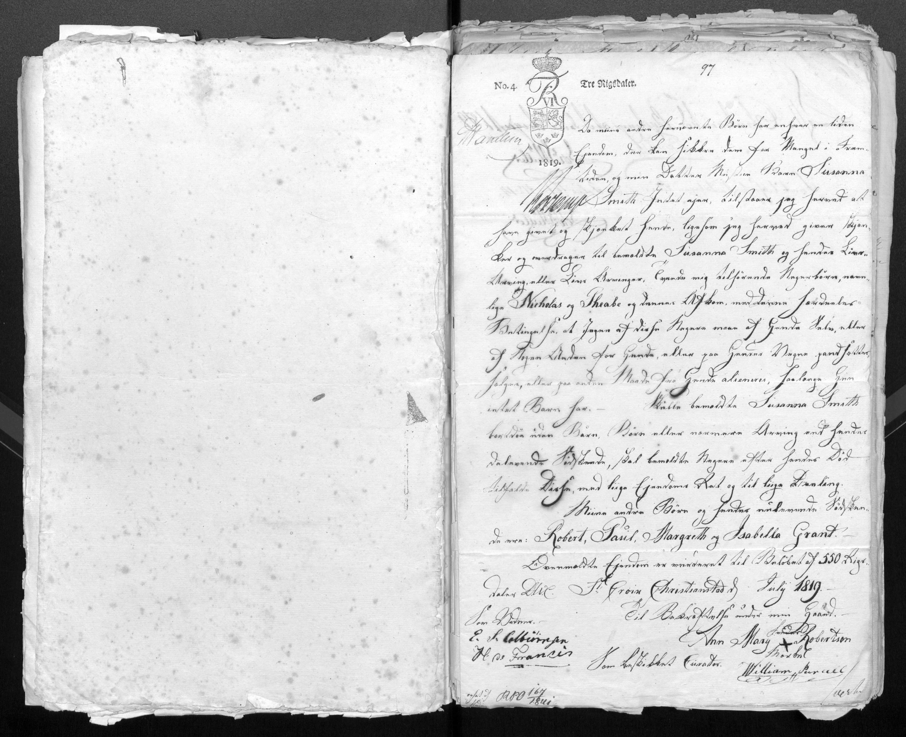

St. Croix was a Danish colonial possession — part of what Denmark called the Danish West Indies, today the U.S. Virgin Islands. Denmark purchased St. Croix from France in 1733-34 and introduced the plantation system and slavery. The island grew sugar. The labor was enslaved African people. The same year Denmark purchased St. Croix, a ferocious slave revolt on the neighboring island of St. John required French troops from Martinique to suppress. This was the world Esther Sam was born into.
Denmark officially abolished the slave trade in 1803 — the first European slave-trading state to do so. But that did not free the people already enslaved on St. Croix. The enslaved population continued to be held in bondage for another 45 years. Denmark did not emancipate the enslaved people of the Danish West Indies until 1848 — when a slave revolt on St. Croix finally forced the colonial governor's hand. Esther Sam received her individual freedom in 1819. The broader emancipation came 29 years later.
In 1801-1802 and again in 1807-1815, Great Britain occupied the Danish West Indies during the Napoleonic Wars. Between these British occupations, St. Croix briefly came under English colonial law. The main seat of Danish colonial government was in Christiansted, St. Croix — the same city where the July 1, 1819 legal deed naming Nicholas and Pheabe was recorded.
Esther Sam was born approximately 1781 on or near the Paulus Plantation in St. Croix. She was classified as Negro — the darkest classification in the Danish colonial racial hierarchy, meaning both her parents were classified as Black. She was enslaved on Morning Star Plantation under the administration of H.C. Francis. At some point she came under the household or influence of the Fibiger family — A.C. Fibiger, connected to the Little La Grange and Jolly Hill plantations — who formally freed her.
On April 1, 1819 A.C. Fibiger freed Esther Sam. The freedom was read in court on June 29, 1819. Her official Freedom Brief — her legal document of liberty — was issued on January 14, 1820. During the processing period she was administratively associated with Morning Star under H.C. Francis. When her name was formally registered in freedom, she chose or was assigned the surname Nicholas — the name of a man named Nicholas paired with a woman named Pheabe, whose descendants were legally registered in Christiansted on July 1, 1819 with H.C. Francis as witness.
On April 23, 1826 — seven years after her freedom — Ester Sam is documented by name in the Register of Black Communicants at Morning Star, taking Holy Communion alongside Julia M de Francis, Sophia F de Francis, Thomas Petersen, Catharine Deisler, and Anna M M Morgen. She is listed as Free. She is still in St. Croix. She is part of the Morning Star community.
After April 1826, no further primary source document has yet been found for Ester Sam or Ester Nicholas in St. Croix or anywhere else.
 Register of Free Persons of Color · St. Croix, Danish West Indies · Record No. 1395 · Ester Nicholas · Freed by A.C. Fibiger April 1, 1819 · Free Brief January 14, 1820
Register of Free Persons of Color · St. Croix, Danish West Indies · Record No. 1395 · Ester Nicholas · Freed by A.C. Fibiger April 1, 1819 · Free Brief January 14, 1820

Morning Star Plantation Grouping · Lines 35–38 · Esther Sam — Line 37 — Negro · H.C. Francis administrator · National Archives M1883 Roll 2 Free Colored Census · St. Croix · 1820 · Ester Nicholas · Record No. 1395 · Denmark, Free Colored Censuses 1815-1832
Free Colored Census · St. Croix · 1820 · Ester Nicholas · Record No. 1395 · Denmark, Free Colored Censuses 1815-1832

Register of Black Communicants · Morning Star Estate · April 23, 1826 · Ester Sam — Line 177 — Negro — Free · St. Croix, Danish West IndiesC. Francis — Friemand (Free Man) — arrested for disorderly conduct on April 24, 1826 by the Night Watch. Given a severe reprimand and warning for future good behavior on April 25, 1826. Christiansted Jurisdiction, St. Croix.
C. Francis is listed as a Freeman — a free person, not enslaved. His April 24, 1826 arrest falls one day after Ester Sam's April 23, 1826 communion at Morning Star. The de Francis surname connects to H.C. Francis — the administrator of Ester Sam's freedom papers — and to Julia M de Francis and Sophia F de Francis who took communion alongside Ester Sam. The C. Francis community is the Morning Star free colored community.
Source: St. Croix Police Journal / Politiprotokol — Christiansted Jurisdiction — April 1826 — Danish West Indies Records RG 55
 C. Francis · Friemand (Free Man) · Police Journal · Christiansted · April 24–25, 1826 · Danish West Indies Records
C. Francis · Friemand (Free Man) · Police Journal · Christiansted · April 24–25, 1826 · Danish West Indies Records
The July 1, 1819 Christiansted deed names Nicholas and Pheabe as an ancestral couple whose descendants are being legally registered. Nicholas is a person — a man — not a randomly chosen surname. Pheabe is his partner. Their descendants form the documented Nicholas family of St. Croix.
Ester Sam took the name Ester Nicholas upon freedom because she was — or claimed descent from — this Nicholas. She was classified as Negro — fully African ancestry — in a colonial system that tracked racial classification precisely. Nicholas and Pheabe, whoever they were, were the ancestors who gave this family its name.
Who Nicholas was before his name became a family surname is not yet documented. He may have been an enslaved man who was known by the name Nicholas on a plantation — a practice common throughout the Caribbean and American slave systems where enslaved people were given single names, often classical or biblical. Pheabe — a variant of Phoebe — was a common name given to enslaved women throughout the Atlantic world. Their children and grandchildren carried Nicholas as a surname into freedom.
Nicholas and Pheabe are named in a Danish colonial deed dated July 1, 1819 in Christiansted, St. Croix — witnessed by H.C. Francis — as the ancestral couple whose descendants are being legally registered. This is a primary source document held in Record Group 55, Records of the Government of the Danish West Indies, National Archives of the United States.
When families were separated by the slave trade — sold across state lines, shipped between continents, divided between plantations — the paper trail was deliberately broken. Documents were not kept for enslaved people's families. Births were not registered. Marriages were not recorded. The system depended on forgetting.
The DNA does not forget. When Hjordis Corbin took the AncestryDNA test, 2,050 of her matches were connected by Ancestry's algorithm to the Nicholas surname. That is not a coincidence of spelling. That is biology — shared segments of chromosomal DNA inherited from a common ancestor. The DNA is the evidence that the paper trail was not permitted to leave.
A gap between Ester Nicholas of St. Croix in 1826 and Easter Bell Nichols of Texas in 1838 does not mean there is no connection. It means the people in between — whoever carried the Nicholas name or the Nicholas blood from the Caribbean through New Orleans into Texas — were not recorded in surviving documents. They existed. They had children. The DNA proves it. The documents have not yet caught up.
Note: Per GEDmatch Terms of Service, individual kit IDs and email addresses from GEDmatch are not published here. The cM amounts and relationship estimates above are from AncestryDNA only. GEDmatch analysis for kit QW8418781 (Jasmine M. Lee) confirmed 377 matches at the 5.5 cM threshold in the Black Dutch Fork South Carolina Genealogy Project — haplogroups E1b1, LOa2a1, L3d1b confirmed.
Between Ester Nicholas of St. Croix and Easter Bell Nichols of Texas there is a documented community of Black Nicholas families spread across the Mississippi River corridor parishes of Louisiana — in Ascension, Iberville, Saint James, and Feliciana Parishes. These families were in Louisiana at the right time, in the right place, with the right surname. And they share DNA with Hjordis Corbin.
Whether they are the descendants of Ester Nicholas who migrated from St. Croix through New Orleans after 1826 — or whether they are a separate Virginia-origin Nicholas family who arrived through the domestic slave trade — or whether both origins intermarried in Louisiana over generations — has not been confirmed by primary source document.
The Louisiana Nicholas families documented above share DNA with Hjordis Corbin and occupy the geographic and temporal corridor consistent with descendants of Ester Nicholas who migrated from St. Croix through New Orleans after 1826. The daughter named Estreae — the French Creole form of Easter/Esther — in Anlaine Nicholas's household may reflect a family tradition of naming daughters after an ancestor named Ester or Easter. The bridge document connecting any specific Louisiana Nicholas person to either Ester Nicholas of St. Croix or Easter Bell Nichols of Texas has not been found. This remains open research.
The Trans-Atlantic Slave Trade Database documents a ship called the Rainbow that arrived in Charleston, South Carolina in 1758 carrying 201 people from the Bight of Benin — the Yoruba and Dahomey region of West Africa that is today Nigeria and Benin. The AncestryDNA results for this family confirm Yoruba and Dahomey ancestry. This is the connection documented in the How We Got Here story.
Many ships on the Middle Passage made intermediate stops at Caribbean islands before reaching their final American destination. Barbados was one of the most common stops. The Danish West Indies — including St. Croix — was also a documented intermediate port. If the Rainbow or a related voyage stopped at St. Croix, people from the same Yoruba and Dahomey community may have been left there while others continued to Charleston.
This would mean that the ancestors of Ester Nicholas of St. Croix and the ancestors of Easter Bell Nichols of Texas came from the same West African community — separated not by different origins but by different ports of entry. The DNA showing shared Yoruba and Dahomey ancestry in both families is consistent with this possibility.
The Rainbow voyage (Trans-Atlantic Slave Trade Database Voyage 90466) should be searched for documented intermediate stops at St. Croix, Barbados, or other Caribbean ports before reaching Charleston in 1758. If the Rainbow stopped at St. Croix, that would suggest a shared West African origin for both the St. Croix Nicholas community and the Texas Nichols community. This has not been confirmed by document.
Esther Sam — enslaved on Morning Star Plantation, St. Croix, Danish West Indies — was freed April 1, 1819 by A.C. Fibiger. She received her Free Brief January 14, 1820. She took the name Ester Nicholas. She descended from a couple named Nicholas and Pheabe registered in Christiansted on July 1, 1819. She was alive and free in St. Croix as late as April 23, 1826 — seven years after her freedom — taking communion at Morning Star. Three independent primary sources from three different record types confirm her identity, her freedom, and her presence in St. Croix.
Hjordis L. Corbin shares DNA with 2,050 people connected by Ancestry's algorithm to the Nicholas surname. The highest confirmed match — astewart277 at 15 cM — has a public tree documenting the Louisiana Nicholas family of Ascension and Saint James Parishes. At 15 cM the shared ancestor is approximately 4-5 generations back — placing the common ancestor in the 1820s-1850s, consistent with Ester Nicholas's documented life dates.
Ester Nicholas of St. Croix had descendants who migrated from the Caribbean to Louisiana through New Orleans after 1826, whose descendants eventually reached Austin County Texas, and whose bloodline connects to Easter Bell Nichols of Bellville. This hypothesis is supported by the DNA evidence, the geographic corridor, the surname continuity, the naming pattern (Estreae/Easter in Anlaine Nicholas's household), and the timeline. It is not yet confirmed by a primary source document that bridges the gap between St. Croix 1826 and Texas 1838.
Contact djshook47 (41 cM) and Deirdre Melvin (32 cM) — the two highest Nicholas surname DNA matches — to ask about Louisiana, St. Croix, or Caribbean ancestry. Search St. Croix baptismal records 1819-1835 for a child of Ester Sam or Ester Nicholas. Search Morning Star plantation journals for Ester Sam after 1826. Search Louisiana arrival records 1820-1840 for a Nicholas family from St. Croix. Search the Dalvius M King-Harvy thread — he matched John Armstrong's DNA and has Annie Nichols as an ancestor — this connection is unresolved.
If the documentary bridge between Ester Nicholas of St. Croix and Easter Bell Nichols of Texas is ever confirmed, the direct maternal line of this archive would extend before Molley — the earliest currently documented ancestor — back to the Danish West Indies and the ancestral couple Nicholas and Pheabe.